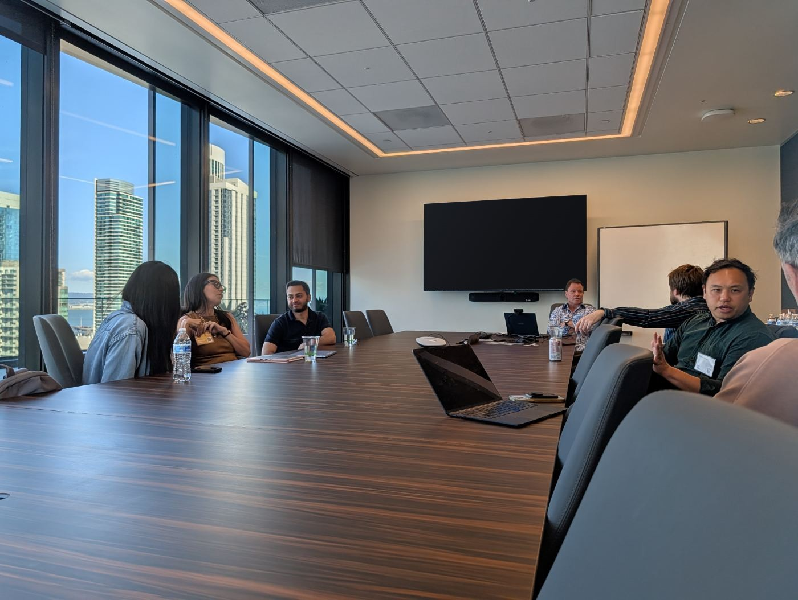

Shared context
You understand the pressure.
Similar stages, constraints and responsibilities make the conversation relevant.
Our story · Venture Executive Network
The experience that could change your next decision may belong to someone you haven’t met yet. We are building VEN to bring that experience closer.

Why this matters
You raise capital to build something ambitious. Then come the decisions: which customers to pursue, when to hire, where to focus the product, how far the runway will stretch.
Some of those calls are new to you. They are still yours to make, often before you have the time or experience you would like.
“The best guidance I ever got as a founder came from other founders.”
VEN extends that founding insight to leadership teams: relevant experience should be easier to reach when a consequential decision is still in front of you.
Our mission
Support shaped around your role, stage and priorities, while the decision is still in front of you.
The idea behind VEN
Shared company stage gives a conversation context. Different operating histories give it something new.
One leader has built the sales team. Another has reworked the pricing. Another has managed a difficult runway decision. The value is in understanding the situation and bringing experience the other person hasn’t had.
Shared context
Similar stages, constraints and responsibilities make the conversation relevant.
Different experience
Different paths, mistakes and perspectives create opportunities to learn.
That is the thought behind the VEN identity: bring people together around common context, and make room for what each uniquely contributes.
What we believe
These principles shape the kind of network we want to build and the conversations we want to make possible.
Make room for the constraint, uncertainty or tradeoff that actually needs attention.
Share the context behind what worked, what didn’t and what you would do differently.
Ask honest questions. Challenge assumptions thoughtfully. Leave space for a different view.
Bring a sharper question, a clearer priority or a practical next step back to your team.
The experience behind the work
VEN builds on the FounderNexus member experience. FounderNexus was developed by experienced founders, including Court Lorenzini, the founding CEO of DocuSign.
That founding experience is part of the story. So are the members who contribute their own hard-won lessons and the operators and investors who bring specialist perspectives to sessions.
FounderNexus founder
Founding CEO of DocuSign
Resources & company buildingSession contributor
Former CEO of Maxio
Seed fundraisingSession contributor
Former partner at Threshold Ventures
The investor perspectiveFounding experience and selected FounderNexus session contributors.
From belief to membership
Your VEN Partner helps connect your priorities with relevant people and conversations. Each eligible leader can experience the support through their own trial.